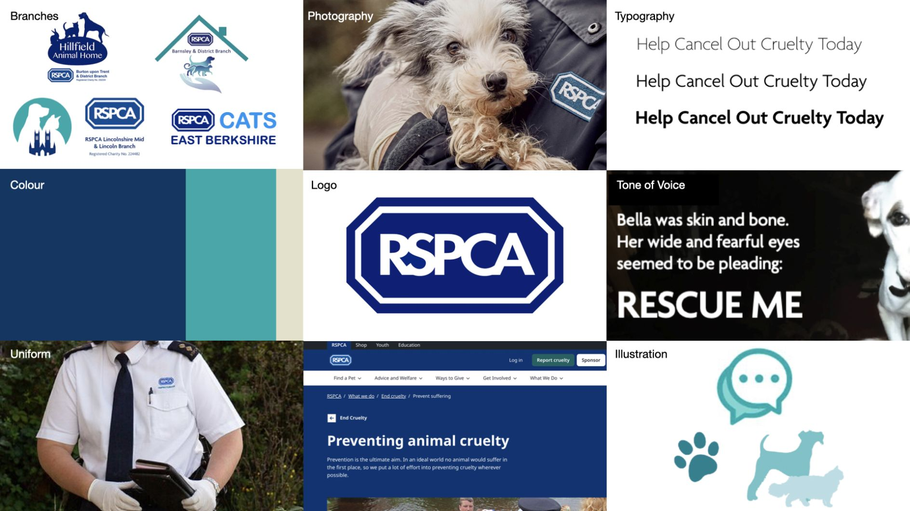
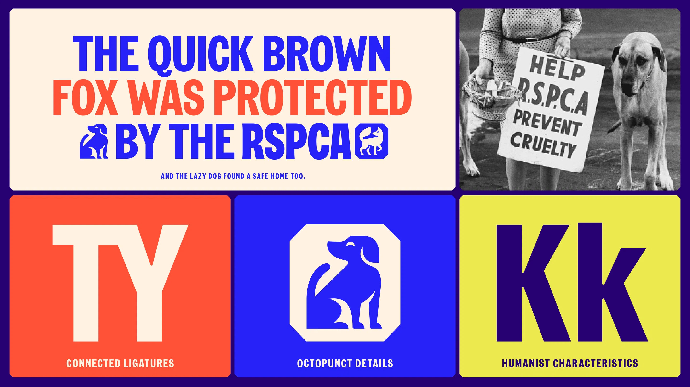
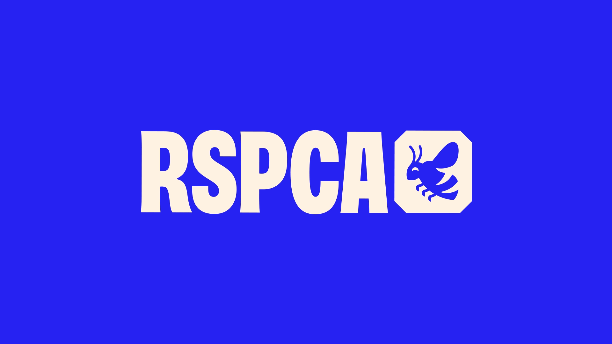
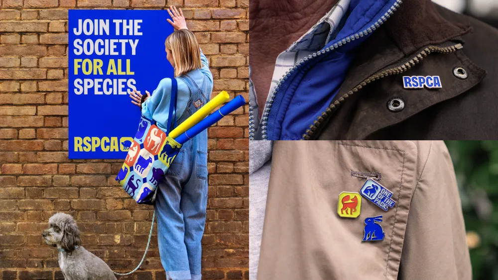
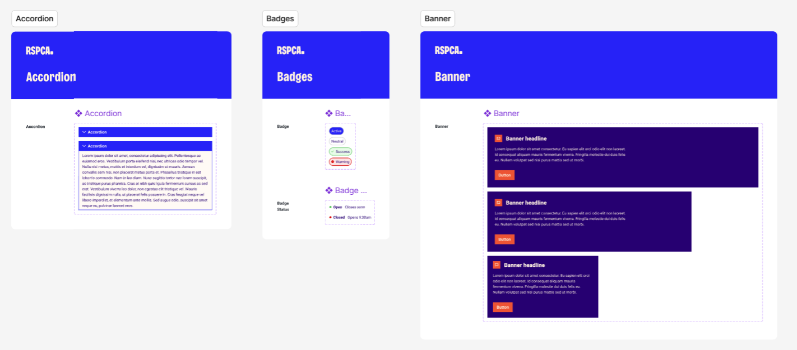
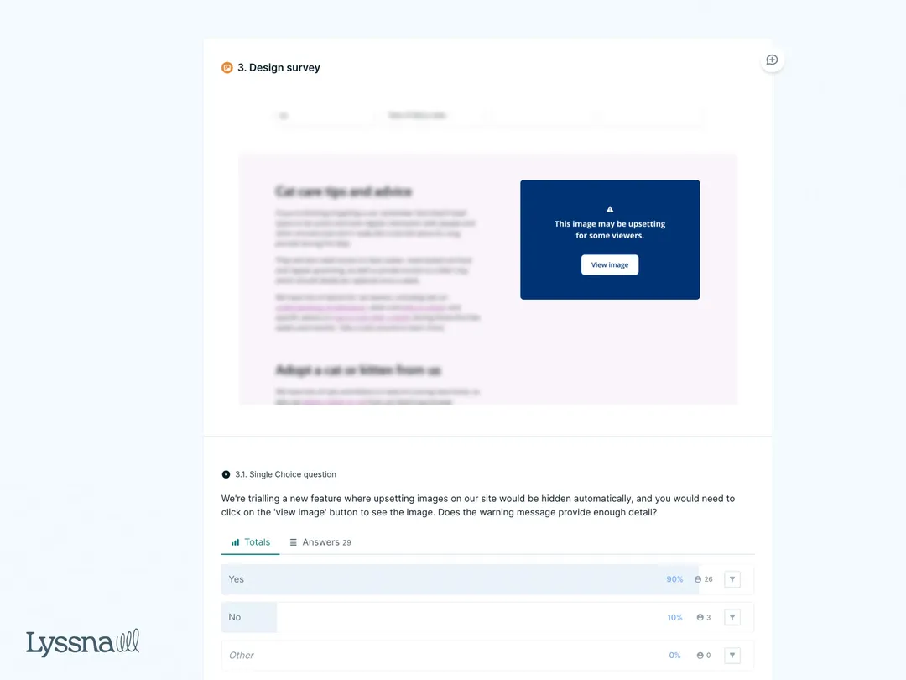
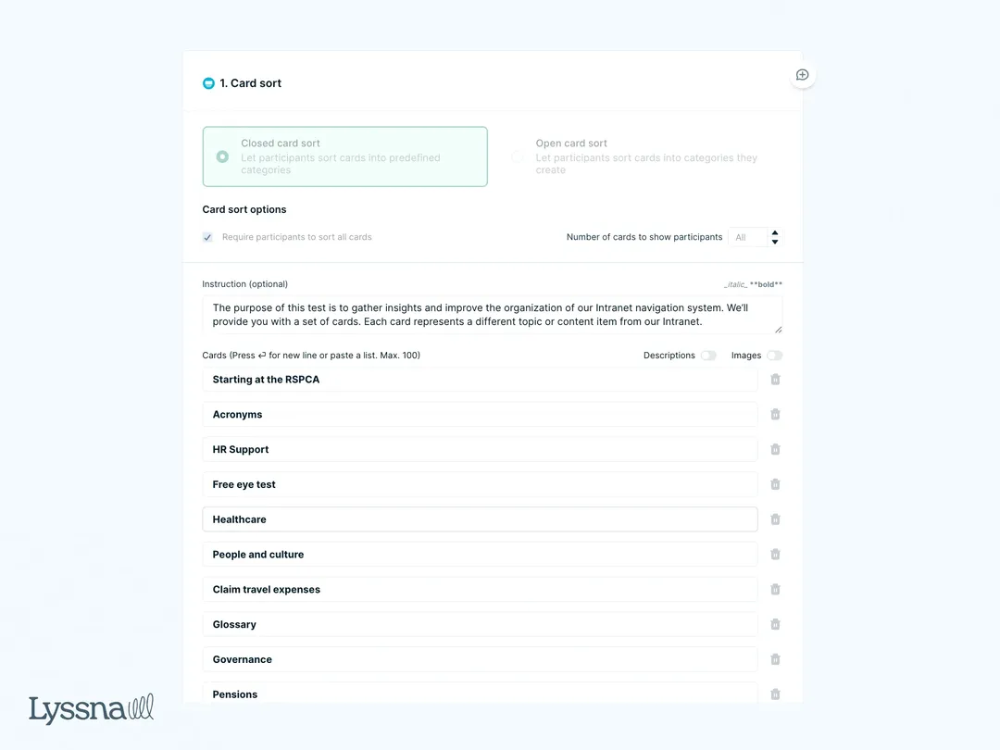
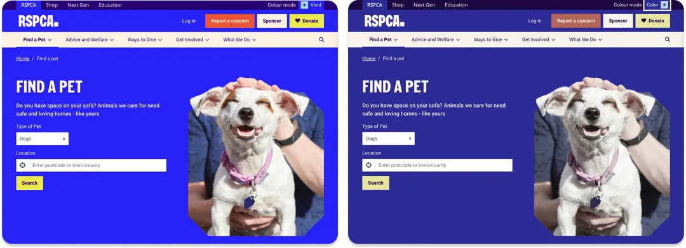

Overview
Problem: The RSPCA hadn’t rebranded since the 1970s. Our old brand and digital infrastructure made accessibility difficult and inconsistent across platforms.
Outcome: We used the rebrand as a catalyst to prioritise accessibility, launch our first design system, and embed inclusive thinking across teams.


The Challenge
Change in a large charity can be slow – and with 200 years of heritage, many ways of working were deeply ingrained. But when the RSPCA began its first rebrand in over 50 years, we had the perfect opportunity to make bold progress.
Our digital experience team had already laid the groundwork: building a passionate internal UX team, gaining leadership support, and making the case for accessibility as a central part of our future. The rebrand gave us the freedom and visibility to finally put inclusive design at the forefront.
Our Goals
- Bring accessibility up to modern standards across all digital touchpoints
- Lay the foundation for a unified and scalable design system
- Embed inclusive design thinking across teams and disciplines
- Build partnerships with accessibility advocates and charities

What I Did
1. Balanced bold branding with accessibility
Working closely with JKR, our creative agency, we had open conversations about colour, type, motion and contrast. This was not a one-way process—we challenged decisions, proposed alternatives, and found creative compromises that stayed true to the bold, braver brand while meeting accessibility needs.


2. Built our first design system: Keystone
Inspired by the beaver building his dam (a keystone species), Keystone is now the RSPCA’s design system and the digital foundation for all future work. It ensures consistency across platforms, allows for global updates, and gives us a central place to bake accessibility in from the start.

3. Expanded training and tooling
We began a cross-charity rollout of accessibility training and introduced new testing tools like Lyssna to empower teams across departments to think inclusively. From content creators to developers, everyone is now part of the solution. By prioritising testing, we've significantly enhanced our ability to make data-driven decisions, better serve a broad audience, and respond quickly to feedback. This transformation has not only improved the usability and accessibility of our digital products but also deepened our connection with supporters.


4. Started to collaborate externally
We know we’re not experts in everything—so we’ve begun forming lasting partnerships with disability-focused charities and involving supporters with lived experience. Their feedback is shaping what we do next.
5. Implemented strategic research and testing
We began a rigorous research and testing programme to ensure that our designs met accessibility standards, but also that they worked for all users. We added new filter - click it and it reduces the colors. It's called calm mode. We've had a really positive reaction from that. People have been saying that it's great for neurodivergence and better for their eyes.

Outcomes
- Our first accessible-ready design system is live
- Teams across the RSPCA are actively engaging with accessibility
- We can now make global, consistent changes across our web estate
- Support from leadership has unlocked a roadmap for further investment
Reflections
Accessibility isn’t a checkbox—it’s a mindset shift. The rebrand gave us permission to think differently, but the real progress came from sustained internal work: building trust, embedding champions, and showing the value of doing things the right way.
We’re just getting started, but we’re proud of the foundation we’ve built and excited about what’s next.